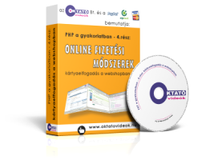

Internetes fizetési megoldások
Ebben a részben azt mutatjuk be lépésről lépésre, hogy a webshopunkban miként tudjuk megvalósítani a bankkártyákkal való fizetést. Először az OTP magyar nyelvű fizetési felületének integrálását tárgyaljuk, majd utána megnézzük, hogy az angol nyelvű PayPal fizetési rendszerét miként tudjuk beépíteni a webshopba. Az előadások során gyakran hivatkozunk a sorozat előző (3.) részében tanultakra, így érdemes azt a részt is áttanulmányozni!
Kártyaelfogadás az OTP rendszerében:
- Bevezető lecke (8:06)
- Jelentkezés a kártyaelfogadói rendszerbe (8:38)
- A kártyaelfogadói szerződés kitöltése (7:05)
- A tesztelés első lépései (19:55)
- Webes űrlap készítése a tesztfizetéshez (10:36)
- A fizetés adatainak kiolvasása adattáblából (10:40)
- Alternatív fizetés-indítási módszer (9:21)
- A bankkártyás fizetés beépítése a webshopba (17:47)
- A fizetés eredményének feldolgozása (26:59)
- Többszöri fizetési kísérlet engedélyezése (21:48)
- Vásárlói tájékoztató a weblapon (17:26)
- A kártyaelfogadói rendszer élesítése (13:34)
Fizetés elfogadása a PayPal-on:
- Bevezető lecke (5:33)
- Regisztráció a fejlesztői környezetbe (6:17)
- Céges teszt-regisztráció (23:08)
- Teszt-regisztráció magánszemélyként (13:50)
- Teszt-fizetés indítása egyszerűen (20:44)
- Ha az ügyfél bankkártyával fizet... (7:39)
- A fizetés eredményének feldolgozása (17:16)
- A PayPal fizetés beépítése a webshopba (30:40)
- Eredmény-feldolgozás a webshopban (11:42)
- Pénz küldése és fogadása a PayPal-on (17:32)
- A pénz lehívása magyar bankszámlára (7:40)
- A fizetési rendszer élesítése (14:33)
- Pénzfogadási korlát megemelése a személyazonosság és a lakcím igazolásával (13:14)